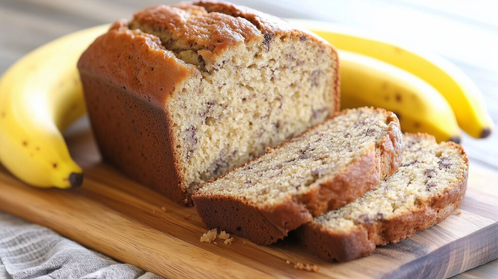

How to make the best Banana Bread

This recipe is perfect for the case that you have some leftover ripe bananas with which you just don't know what to do.
Ingredients
- 200g flour
- 80ml oil
- 100g cane sugar
- 2 eggs
- 3 bananas
- 1 tbs baking powder
- vanilla extract
- cinnamon
- optional: walnuts
- Preheat the oven at 180°. Combine the flour, oil sugar and eggs in a bowl.
- Squish the bananas into a paste using a fork.
- Add the banana paste, the baking powder, some vanilla extract and some cinnamon into the mixture. (If you want, you can also add some chopped up walnuts)
- Mix together until it forms a thick batter.
- Pour the batter into a baking sheet lined loaf form. (If you've added walnuts, you can also put some on top of the batter)
- Put into the oven at 180° for 45 minutes.
- Take out of the oven and let it cool. Tada! Your banana bread is finished. Enjoy!
Click here if you want to get back to the homepage.
Made by totalkreativ